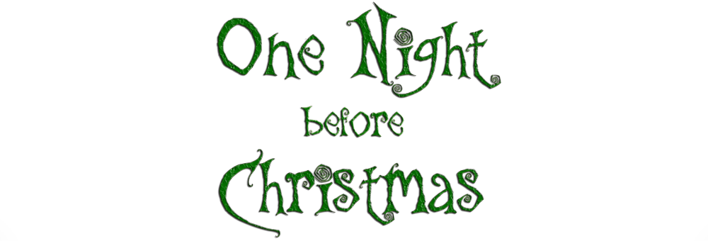
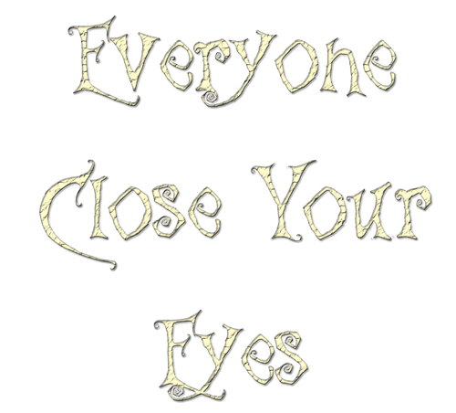
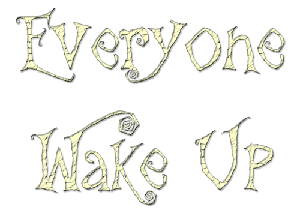
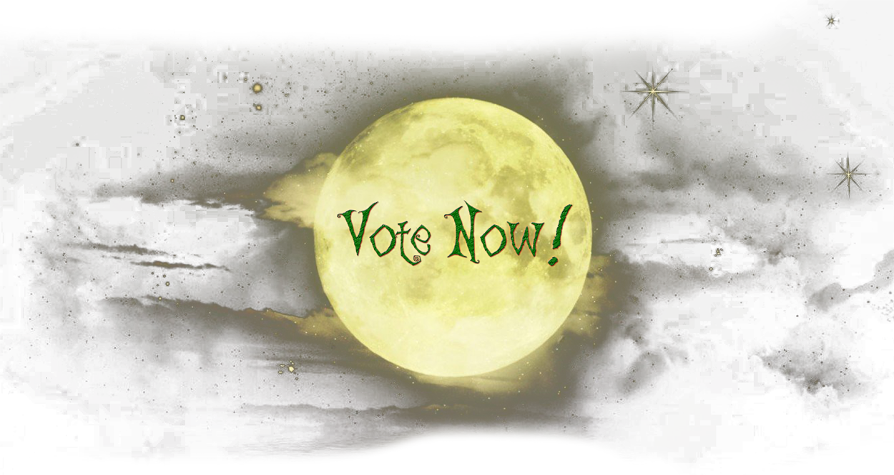
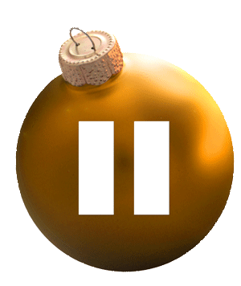

On a choice that's waiting on a player, it gives them up to 30 seconds, checks in once, then moves on after 5 more seconds either way.
Add each player. Assigning the card they were dealt is optional — it lets the app track roles and warn about mismatches.
…
Enter what happened tonight. The app resolves who lives or dies and updates the tracker. Leave a choice blank to skip it.
Tap a player to toggle eliminated. The app checks for a winner after the vote.
Grab these and place them in the center of the table: